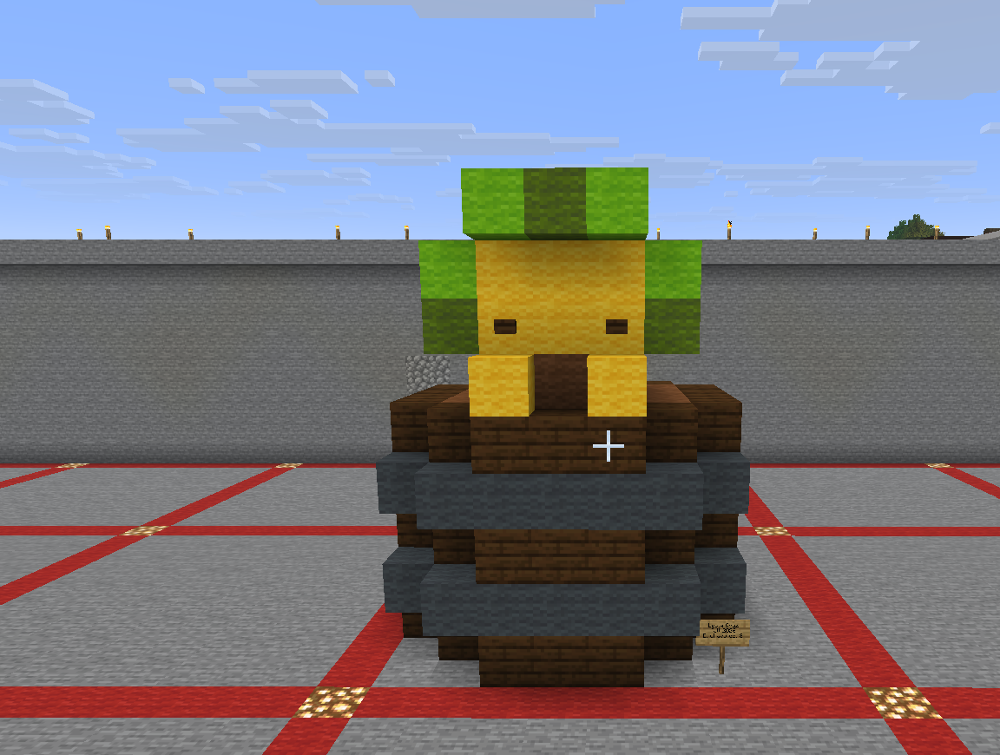

This assignment asked us to build a sculpture revolving around cultural significance. The first thing I thought of was a show called El Chavo del Ocho, which was a popular franchise that ran until 1980. This media piece is still widely beloved and often referenced.
